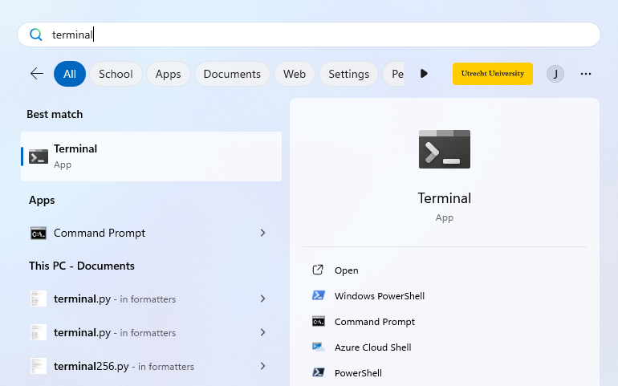
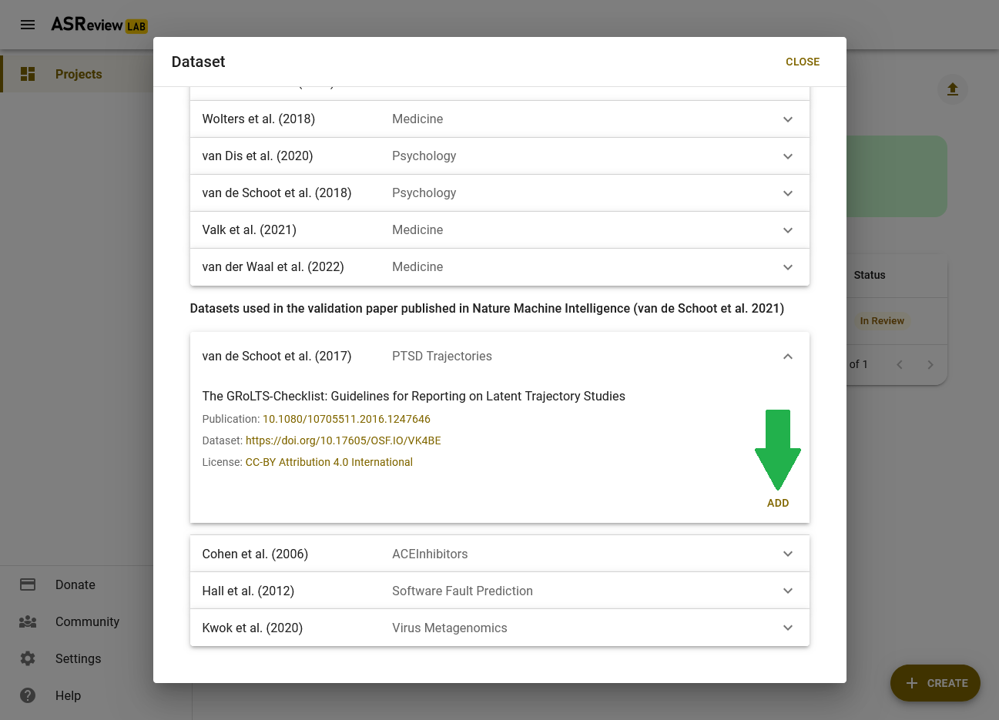

Introductory exercise to ASReview LAB
Introduction to the software ASReview LAB
The goal of this exercise is to get familiar with AI-aided screening by making use of ASReview LAB v1.x.
You will learn how to install and set up the software, upload data, screen records, and export and interpret the results. The exercise will guide you through all the steps of AI-aided screening as described in the workflow on Read-the-Docs.
Enjoy!
Getting familiar
Before you start, you might want to read a bit more on:
The paper that was published in Nature Machine Intelligence
The software
Step 1: Installing Python and ASReview LAB
First, you need to install Python.
Once you have Python installed, you can go through the easy 3-step guide to installing (or upgrading) ASReview on the ASReview-website.
More detailed installation information, troubleshooting, and installation on a server or via a Docker are available on ReadTheDocs.
Have you installed the latest version of ASReview? You can proceed to step 2!
Step 2: Starting ASReview LAB
To open ASReview LAB in your browser, you need to start it in the terminal. You can open your terminal by typing ‘terminal’ (cmd on Windows 10 or lower) in your computers search bar (select ‘Run as administrator`’ if you have this option).

The terminal will open, in which you can type the following command and press enter:
asreview labIt takes a few seconds for ELAS - your Electronic Learning Assistant - to start the software. It will appear in your (default) web browser.
But why do you need to start it up by running code in your command prompt? This ensures that ASReview LAB is run locally. More specifically, your data is and stays your own. Small price to pay for complete privacy, right?! Read more about the key principles in the Zen of Elas!
Note that you have to keep your command-line interpreter running while using ASReview LAB, even though the interface is in your browser!
You can also run the software via a server, but you need to take care of hosting the server yourself (or ask your IT-department).
Have you opened ASReview LAB in your browser? If so, you can proceed to step 3!
Step 3: Creating a project
Now that you have installed and opened ASReview LAB, you can create a new project. Below you will find a step-by-step guide. Note that the screenshots shown below are made in dark mode.
- New project;
Hover your mouse over the ‘create’ button with the plus sign in the bottom right corner.
- Project name;
Select Validation Mode, fill out a project name and press ‘NEXT’. Note that you can fill out your name and a description as well.

For this exercise we are screening in the so-called ‘Validation Mode’ of ASReview. By screening in the Validation Mode, we are going to make use of a benchmark dataset. This means that all records in the dataset have already been labeled as relevant or irrelevant. This is indicated to the user through a banner above each article. Note that in ‘Oracle Mode’ - when screening your own dataset - the relevant papers will not be marked; you, the oracle, have to make the decisions.
More detailed information about setting up a project can be found on ReadTheDocs.
Have you started creating a new project? If so, you can proceed to step 4!
Project setup
Step 4: The dataset
Now that you have created your ASReview project (woohoo!), you need to set it up. Without data, we have nothing to screen. So, you need to tell ELAS which dataset you want to screen for relevant articles.
Click on the ‘ADD’ button next to ‘Add dataset’. Now a menu appears where you can choose how to load the dataset. You can add your dataset by selecting a file or providing an URL. For this exercise, we will use a benchmark dataset.
Go to the ‘Benchmark datasets’ button, open the first dataset (i.e. the Van de Schoot (2017) dataset about PTSD trajectories) and click on ‘ADD’. After you select the dataset, click on ‘SAVE’.

Have you successfully selected/uploaded the dataset? If so, you can proceed to step 5!
Step 5: Prior knowledge
Before you can start screening the records, you need to tell ELAS what kind of records you are and what kind of records you are not looking for (i.e., relevant and irrelevant records, respectively). We call this prior knowledge. Based on the prior knowledge you provide, ELAS will reorder the stack of papers and provide you with the record that is most likely to be relevant (default settings).
When performing a systematic review with your own data, you need to provide the prior knowledge yourself (at least one relevant and one irrelevant record). However, because you are using the Validation Mode of ASReview, the relevant records are known; the original authors have already read ALL records.
To select the prior knowledge you first need to click on the ‘ADD’ button next to ‘Add prior knowledge’; see also the documentation about the selection of prior knowledge. Now you will see a menu about selecting prior knowledge.
The following five papers are known to be relevant:
- Latent Trajectories of Trauma Symptoms and Resilience (DOI: 10.4088/JCP.13m08914)
- A Latent Growth Mixture Modeling Approach to PTSD Symptoms in Rape Victims (DOI: 10.1177/1534765610395627)
- Peace and War: Trajectories of Posttraumatic Stress Disorder Symptoms Before, During, and After Military Deployment in Afghanistan (DOI: 10.1177/0956797612457389)
- The relationship between course of PTSD symptoms in deployed U.S. Marines and degree of combat exposure (DOI: 10.1002/jts.21988)
- Trajectories of trauma symptoms and resilience in deployed US military service members: Prospective cohort study (DOI: 10.1192/bjp.bp.111.096552)
To add the relevant records, you click on ‘Search’, copy and paste the titles of these relevant records one by one in the search bar and add them as relevant.
After adding all five relevant records, you can add some irrelevant ones by clicking the ‘Random’ button (use the arrow in the upper left corner to be able to select this button) and by changing ‘relevant’ to ‘irrelevant’. Select five irrelevant records and click on ‘CLOSE’.
Have you selected five relevant and five irrelevant records? If so, you can proceed to step 6!
Step 6: Active learning model
The last step to complete the setup is to select the active learning model you want to use. The default settings (i.e. Naïve Bayes, Max and tf-idf) will suffice for this exercise. If you want to change the mode, read which options are built-in or add your own model via a template.
You can click on ‘NEXT’. A menu with the defaults will appear. Since we are using the defaults, you can click on ‘NEXT’ again. In the last step of the setup, ASReview LAB runs the feature extractor, trains a model, and ranks the records in your dataset. Depending on the model and the size of your dataset, this can take a couple of minutes (meanwhile, you can enjoy the animation video or read the blog post on What is Active Learning?).
After the project is successfully initialized, you can start reviewing.

Have you finished the setup? If so, you can proceed to step 7!
Screening phase
Step 7: Screening the records
Everything is set up and ready to screen, well done!
Since we are in the Validation Mode of ASReview, you can pretend to be an expert on the topic of PTSD and pretend you have all the knowledge of the original screeners. All records in the dataset have been labeled as relevant/irrelevant, which is indicated through a banner above each article. Click on the heart shaped Relevant button if the record is marked as relevant. If not, you can press the Irrelevant button.
Now, all we need is a Stopping Rule to determine when you are confident that you have identified (almost) all relevant records in your dataset. For this exercise, continue screening records until you have marked 50 consecutive records as irrelevant. You can check up on your progress in the Analytics page.
When you have reached your Stopping Rule and you are done screening, go back to the Analytics page. Here you can see the summary statistics of your project such as the number of records you have labeled relevant or irrelevant. It also shows how many records are in your dataset and how many records you labeled irrelevant since you have screened the last relevant record. For more information about how to read these summary statistics and interpret the corresponding charts, check out the documentation on the Analytics page.
The Van de Schoot (2017) dataset contained 38 relevant records in this particular example. Did you get to label all of them as relevant before you reached your Stopping Rule? If you did, great!
What is the percentage of total papers you needed to screen to find the number of relevant records you have found? Is it <100%? Then, you were quicker compared to the original screeners of the dataset!
You probably had to screen about only 2-3% of the data. Amazing right?! Chances are though that you did not get to see a couple of relevant records before you stopped screening. Do you think this is acceptable? There is a trade-off between the time spent screening and the error rate: the more records you screen, the lower the risk of missing a relevant record. However, screening all records in your dataset is still no guarantee for an error rate of zero, since even traditional screening by humans - which is the gold standard to which we compare AI-assisted screening - is not perfect 1.
Your willingness to accept the risk that you may exclude some relevant records is something to take into account when deciding on a Stopping Rule. Read more about Stopping Rules and how to decide on a good strategy for your data on the discussion platform.
Step 8: Extracting and inspecting the data
Now that you found all or most relevant records, you can export your data using these instructions. If you choose to inspect your data in Excel, download the data in ‘Excel’ format. If you prefer to inspect your data in R, download the ‘CSV (UTF-8)’ format and open it in R.
You can find all the data that was originally imported to ASReview in the exported data file, in a new order and with two new columns added at the end.
Using the information about the Read the Docs page can you reorder your data to appear in the order in which you loaded them into ASReview? And back to the order provided by ASReview?
Check if the number of records coded included = 1 corresponds to the number of relevant records on your Analytics page. From which row number, based on the original ordering, do the included articles come from?
For the last exercise, it is important to change the order back to the order provided by ASReview. Lastly, check out the first few records with no number in the included column. Are those articles labeled as ‘relevant’ in the original dataset? (Whether or not a record was pre-labeled as relevant is shown in the column label_included in the original dataset.)
Goal
In the beginning of the LAB the following goal was specified: “The goal of this LAB is to get familiar with AI-aided screening by making use of ASReview LAB.” Did you achieve this goal?
If so: congratulations! You now know all the steps to create and screen for a systematic review. ELAS wishes you a lot of fun screening with ASReview!
Do you like the software, leave a star on Github; this will help to increase the visibility of the open-source project.
What’s next?
Some suggestions:
Read a blog posts about:
Ready to start your own project? Upload your own data and start screening in the Oracle mode!
Try to find the hidden memory game in ASReview (some people found it by going through the source code on Github… +1 for open-science!)

Footnotes
Wang Z, Nayfeh T, Tetzlaff J, O’Blenis P, Murad MH (2020) Error rates of human reviewers during abstract screening in systematic reviews. PLOS ONE 15(1): e0227742. <https://doi.org/10.1371/journal.pone.0227742>↩︎